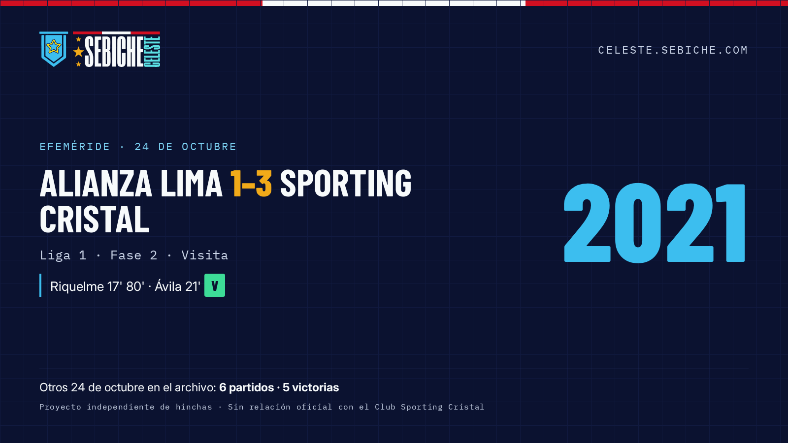
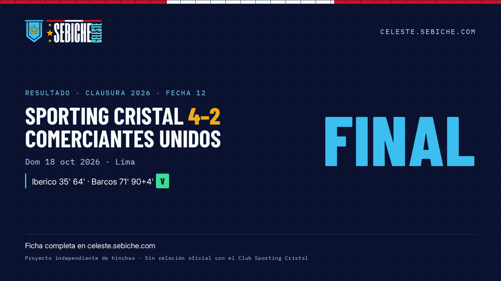

Proyecto independiente de hinchas. Sin relación oficial con el Club Sporting Cristal.
Sebiche Celeste es el archivo abierto de Sporting Cristal: 1948 partidos desde 1956 que se pueden consultar por efeméride, por rival o por temporada, y un calendario de los próximos partidos al que uno se puede suscribir.
Problema. La historia del club estaba repartida entre foros, hilos y la memoria de los hinchas. Contestar "¿cómo nos fue un 24 de octubre?" o "¿cuál es el historial contra Alianza Lima?" exigía horas de búsqueda.
Solución. Se unificó un archivo partido por partido y se publicó en una web rápida con tres preguntas como entrada:
Identidad. El banderín y el logo originales se conservaron píxel a píxel como vector verificado. Alrededor de ellos se construyó un sistema propio: paleta con contraste AA en tema claro y oscuro, tipografías libres auto-alojadas, plantillas para redes generadas con datos reales y un aviso de no afiliación en todas las piezas.
| Dato | Valor |
|---|---|
| Partidos registrados | 1948 |
| Período | 1956–2026 |
| Temporadas | 71 |
| Partidos ante Alianza Lima | 140 |
logo/og/, social/guide/guia-de-marca.pdf

Se pueden usar el logo y las capturas para notas sobre el proyecto, siempre respetando la guía de marca. No se debe presentar el proyecto como oficial del club.
Contacto: (pendiente: Sebiche define el correo público)